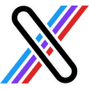

One click on any tweet — no popup, no menu hunting.

Save tweet as Markdown›Save, Copy, or send straight to Obsidian — anywhere a tweet renders.
Per-export toggles for images, stats, and YAML — plus a set-once Obsidian vault.
---
author: "@SpaceX"
source: https://x.com/…
date: 2024-11-21
likes: 682K views: 37.3M
tags: [clippings, x, tweet]
---

Rich frontmatter, engagement stats, and embedded media saved alongside — no link rot.
One-click handoff with [[@handle]] wikilinks and Obsidian-friendly frontmatter.
Single posts, nested replies, and long-form X Articles — all extracted cleanly.